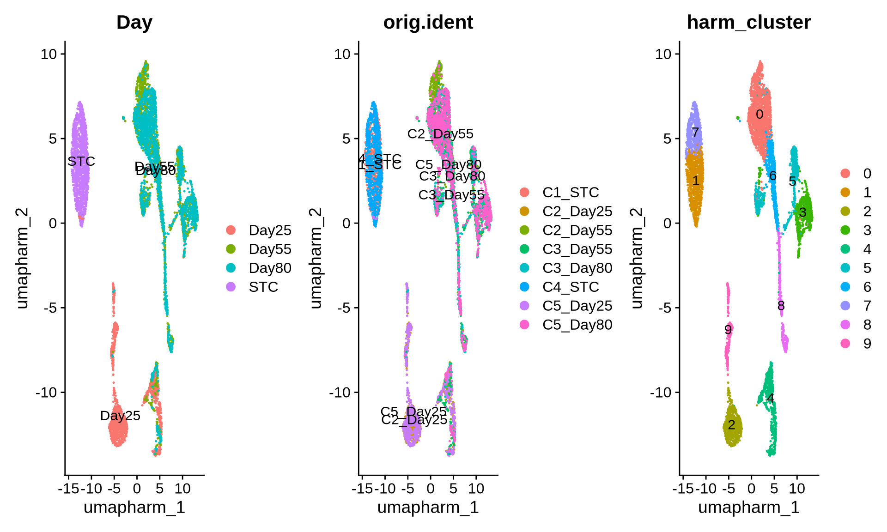

Chapter 9 Multisample analysis
The FLAMES pipeline supports the analysis of multiple samples simultaneously, allowing users to efficiently process complex experimental datasets. This is achieved using the sc_long_multisample_pipeline function. The output generated by this function is similar to the single-sample analysis outlined in previous chapters but offers additional capabilities when the experimental design includes sample replicates.
To take full advantage of these features we need to perform sample integration to generate a single object that we can use to integrate isoform expression across our conditions. First standard preprocessing as described in Chapters 3 and 4 is required. After integration we can perform the following key analysis:
Sample Integration: Combine multiple sample together and add isoform counts.
Trajectory Analysis: Explore genes that change along pseudotime trajectories.
Differential Expression Analysis: Identify differentially expressed isoforms across time points or sample conditions.
Differential Transcript Usage (DTU) Analysis: Investigate changes in isoform proportions between conditions.
Most preprocessing and QC steps remain the same. However, we will also demonstrate how to proceed directly from FLAMES output to initial QC without performing empty droplet removal or ambient RNA normalization. Although these steps are recommended, they may not always be necessary depending on the data.
9.0.1 Dataset Information
For this analysis, we are using a dataset comprising eight samples spanning four time points from an excitatory neuronal differentiation protocol. The protocol is the same as the one used for the D55 sample in previous chapters but utilizes a different cell line. Two samples were collected from each of the following time points:
Stem cells (STC)
Day 25
Day 55
Day 80
This comprehensive dataset will allow us to explore temporal changes in gene and isoform expression throughout neuronal differentiation.
9.1 Standard pre-processing and quality control
As before we will modify the count matrix for each sample so we use gene_symbol instead of ENSG id. The Data generated from this multi-sample experiment is quite large. This is especially the case with Oarfish isoform quantification as there are many more features to consider. This means much of the workflow bellow is time consuming and computationally intensive. Please keep this in mind when processing your samples. In the tutorial we provide code for the required steps but do not evaluate many of the sections bellow due to these computations constraints. The raw counts are available in the multisample data folder if users wish to run through the analysis.
Code
# convert Gene_id to gene symbol for all counts
#run aloop to run this fucntion on all count files.
# Directory with input files
input_dir <- "./data/muti_sample/"
output_dir <- "./data/muti_sample/"
# List all CSV files in the input directory
input_files <- list.files(input_dir, pattern = "\\count.csv$", full.names = TRUE)
# Initialize an empty list to store data frames
result_list <- list()
# Process each file in the directory
total_files <- length(input_files) # Total number of files
for (i in seq_along(input_files)) {
file_path <- input_files[i]
# Extract file name without extension
file_name <- tools::file_path_sans_ext(basename(file_path))
# Construct the output file name
output_file <- file.path(output_dir, paste0(file_name, "_gene_symbol.csv"))
# Show progress to the user
message(sprintf("Processing file %d of %d: %s", i, total_files, file_name))
# Call the function with return_df = TRUE to store the result
result_list[[file_name]] <- convert_ENSGID_to_geneSymbol(
gene_count_matrix_path = file_path,
output_file = output_file,
return_df = TRUE
)
}9.1.1 Define QC function
We have developed a multisample QC function @ref(Multisample QC function) for processing count matrices and constructing filtered Seurat objects, following best practices outlined in the Seurat tutorial. This function includes steps to identify and remove doublets, as well as generate key diagnostic plots for data inspection. We encourage users to customize this function to fit their specific needs, such as applying additional filtering criteria.
For the purposes of presenting concise and readable code we will apply the default filtering parameters to all 8 objects. If users wish to be more specific about filtering each sample independent this is possible and can be done by running the perform_qc_filtering function on each sample with desired parameters.
Code
# Define sample names
sample_names <- c("C1_STC", "C4_STC", "C2_Day25", "C5_Day25", "C2_Day55", "C3_Day55", "C3_Day80", "C5_Day80")
# Initialize a list to store UMAP objects
umap_objects <- list()
# Start the PDF for output
pdf(file = "./output_files/mutli_sample/QC/multisample_QC.pdf", width = 10, height = 6)
# Loop through each sample and apply the QC filtering function
for (i in seq_along(sample_names)) {
sample_name <- sample_names[i]
# Print progress message
message(paste0("Processing sample ", i, " of ", length(sample_names), ": ", sample_name))
# Perform QC filtering
result <- perform_qc_filtering(
result_list[paste0(sample_name, "_matched_reads_gene_count")],
fig_name = sample_name,
project = sample_name
)
# Store the UMAP object from the result
umap_objects[[sample_name]] <- result[[1]]
}
# Close the PDF device
dev.off()
#save the object
#saveRDS(umap_objects, file = "./output_files/mutli_sample/umap_objects.rds")9.2 Multi-Sample integration
First we will merge the seurat objects together and then perform integration. There are many options for sample integration and Seurat provides many wrappers for these functions. Here we will Harmony (Korsunsky et al., 2019) for fast and effective integration. As these processes are time consuming we will load our saved objects.
Code
# intergrate samples
#from the fucntion above pull the filtered seurat object
merged_seurat <- merge(
umap_objects[["C1_STC"]],
y = list(
umap_objects[["C4_STC"]],
umap_objects[["C2_Day25"]],
umap_objects[["C5_Day25"]],
umap_objects[["C2_Day55"]],
umap_objects[["C3_Day55"]],
umap_objects[["C3_Day80"]],
umap_objects[["C5_Day80"]]
),
add.cell.ids = c(
"C1_STC", "C4_STC", "C2_Day25", "C5_Day25",
"C2_Day55", "C3_Day55", "C3_Day80", "C5_Day80"
),
project = "Multi-sample_tutorial"
)
# create a sample column
merged_seurat$sample <- rownames(merged_seurat@meta.data)
## split sample column to makw a batch col
merged_seurat@meta.data <- separate(merged_seurat@meta.data, col = 'sample', into = c('batch', 'Day', 'Barcode'),
sep = '_')
#check some QC metrics
VlnPlot(merged_seurat, features = c("nFeature_RNA", "nCount_RNA", "percent.mt"), ncol = 3, group.by = "Day") +
plot_annotation(title = "Vln plots grouped by Day")
#can plot based on any metadat col
#VlnPlot(merged_seurat, features = c("nFeature_RNA", "nCount_RNA", "percent.mt"), ncol = 3, group.by = "orig.ident")
# Number of cells per group
table(merged_seurat$orig.ident)
table(merged_seurat$Day)
# Apply normal preprocessing steps to merged file
merged_seurat <- NormalizeData(object = merged_seurat)
merged_seurat <- FindVariableFeatures(object = merged_seurat)
merged_seurat <- ScaleData(object = merged_seurat)
merged_seurat <- RunPCA(object = merged_seurat)
ElbowPlot(merged_seurat)
merged_seurat <- FindNeighbors(object = merged_seurat, dims = 1:16)
merged_seurat <- FindClusters(object = merged_seurat, resolution = 0.6)
merged_seurat <- RunUMAP(object = merged_seurat, dims = 1:30)
##save merged object
#saveRDS(merged_seurat, file = "./output_files/mutli_sample/merged_seurat.rds")Code
set.seed(00003)
merged_seurat <- readRDS("./output_files/mutli_sample/merged_seurat.rds")
#Lets plot the merged file.
p1 <- FeaturePlot(merged_seurat, reduction = 'umap', features = 'nCount_RNA')
p2 <- FeaturePlot(merged_seurat, reduction = "umap", features = 'nFeature_RNA')
p3 <- DimPlot(merged_seurat, reduction = 'umap', group.by = 'Day')
p4 <- DimPlot(merged_seurat, reduction = 'umap', group.by = 'orig.ident')
grid.arrange(p1, p2, p3, p4, ncol = 2)Code
merged_seurat <- JoinLayers(object = merged_seurat)
merged_seurat[["RNA"]] <- split(merged_seurat[["RNA"]], f = merged_seurat$orig.ident)
#perform intergation with Harmony
obj <- IntegrateLayers(object = merged_seurat,
method = HarmonyIntegration,
orig.reduction = "pca",
new.reduction = 'integrated.harm',
verbose = FALSE,
)## Warning in harmony::HarmonyMatrix(data_mat = Embeddings(object = orig), : HarmonyMatrix is deprecated and will be removed in the future from the API
## in the future## Warning: Warning: The parameters do_pca and npcs are deprecated. They will be ignored for this function call and please remove parameters do_pca and npcs and pass to harmony cell_embeddings directly.
## This warning is displayed once per session.## Warning: Warning: The parameter tau is deprecated. It will be ignored for this function call and please remove parameter tau in future function calls. Advanced users can set value of parameter tau by using parameter .options and function harmony_options().
## This warning is displayed once per session.## Warning: Warning: The parameter block.size is deprecated. It will be ignored for this function call and please remove parameter block.size in future function calls. Advanced users can set value of parameter block.size by using parameter .options and function harmony_options().
## This warning is displayed once per session.## Warning: Warning: The parameter max.iter.harmony is replaced with parameter max_iter. It will be ignored for this function call and please use parameter max_iter in future function calls.
## This warning is displayed once per session.## Warning: Warning: The parameter max.iter.cluster is deprecated. It will be ignored for this function call and please remove parameter max.iter.cluster in future function calls. Advanced users can set value of parameter max.iter.cluster by using parameter .options and function harmony_options().
## This warning is displayed once per session.## Warning: Warning: The parameter epsilon.cluster is deprecated. It will be ignored for this function call and please remove parameter epsilon.cluster in future function calls. Advanced users can set value of parameter epsilon.cluster by using parameter .options and function harmony_options().
## This warning is displayed once per session.## Warning: Warning: The parameter epsilon.harmony is deprecated. It will be ignored for this function call and please remove parameter epsilon.harmony in future function calls. If users want to control if harmony would stop early or not, use parameter early_stop. Advanced users can set value of parameter epsilon.harmony by using parameter .options and function harmony_options().
## This warning is displayed once per session.Code
obj <- FindNeighbors(obj, reduction="integrated.harm")
obj <- FindClusters(obj, resolution=0.4, cluster.name="harm_cluster")## Modularity Optimizer version 1.3.0 by Ludo Waltman and Nees Jan van Eck
##
## Number of nodes: 7216
## Number of edges: 233507
##
## Running Louvain algorithm...
## Maximum modularity in 10 random starts: 0.9338
## Number of communities: 10
## Elapsed time: 0 secondsCode
obj <- RunUMAP(obj, reduction="integrated.harm", dims=1:20, reduction.name = "umap.harm")
DimPlot(obj, reduction = "umap.harm", group.by = c("Day", "orig.ident", "harm_cluster"), label = T) 
Code
### save object
#saveRDS(obj, file = "./output_files/mutli_sample/integrated_harm_seurat.rds")9.3 Add isoform counts
Now we can add isoform level information to the merged Seurat object. When doing this you may need to convert the oafish files into a count.csv file the row names in the ENSTID_gene_symbol ID form. The function to do so can be found here @ref(Convert Oarfish files to count matrix)
The workflow follows these steps.
- Create a Seurat object per sample
- Merge the objects together
- Filter the isoform merged object based on cell types that are high quality (based on gene level filtering)
- Add the isoform filtered and merged object to the gene level object as a new assay
- Integration on the isoform assay is possible but not shown here.
Code
############ read in count matix and add isoform assay to Seurat object #########
# Define sample names
sample_names <- c("C1_STC", "C4_STC", "C2_Day25", "C5_Day25", "C2_Day55", "C3_Day55", "C3_Day80", "C5_Day80")
#Make Seurat objects not filtered
# Function to read a CSV file and create a Seurat object
create_seurat_object <- function(sample_name, input_dir, project_name) {
# Construct file path
file_path <- file.path(input_dir, paste0("gene_symbol_oarfish_", sample_name, "_counts.csv"))
# Read the CSV file
counts <- fread(file_path)
counts <- as.data.frame(counts)
rownames(counts) <- counts[[1]] # Set row names from the first column
counts[[1]] <- NULL
# Create the Seurat object
seurat_obj <- CreateSeuratObject(counts = counts, project = project_name, min.cells = 5, min.features = 500)
return(seurat_obj)
}
# Directory where the CSV files are stored
input_directory <- "./output_files/mutli_sample/oarfish_counts/"
# Create an empty list to store Seurat objects
iso_seurat_objects <- list()
total_samples <- length(sample_names)
for (i in seq_along(sample_names)) {
sample <- sample_names[i]
message(sprintf("Processing sample %d of %d: %s", i, total_samples, sample))
iso_seurat_objects[[sample]] <- create_seurat_object(
sample_name = sample,
input_dir = input_directory,
project_name = sample
)
}
####### Merge the samples into one object ######
iso.merged_seurat <- merge(
iso_seurat_objects[["C1_STC"]],
y = list(
iso_seurat_objects[["C4_STC"]],
iso_seurat_objects[["C2_Day25"]],
iso_seurat_objects[["C5_Day25"]],
iso_seurat_objects[["C2_Day55"]],
iso_seurat_objects[["C3_Day55"]],
iso_seurat_objects[["C3_Day80"]],
iso_seurat_objects[["C5_Day80"]]
),
add.cell.ids = c(
"C1_STC", "C4_STC", "C2_Day25", "C5_Day25",
"C2_Day55", "C3_Day55", "C3_Day80", "C5_Day80"
),
project = "iso-Multi-sample_tutorial"
)
# create a sample column
iso.merged_seurat$sample <- rownames(iso.merged_seurat@meta.data)
# split sample column to makw a batch col
iso.merged_seurat@meta.data <- separate(iso.merged_seurat@meta.data, col = 'sample', into = c('batch', 'Day', 'Barcode'),
sep = '_')
## filter the data to iso and gene cells match
merged_seurat_isoform_filtered <- subset(iso.merged_seurat, cells =obj@graphs[["RNA_nn"]]@Dimnames[[1]])
VlnPlot(merged_seurat_isoform_filtered, features = c("nFeature_RNA", "nCount_RNA", "percent.mt"), ncol = 3)
# perform standard workflow steps
merged_seurat_isoform_filtered <- NormalizeData(object = merged_seurat_isoform_filtered) # if using SCT dont run this
merged_seurat_isoform_filtered <- FindVariableFeatures(object = merged_seurat_isoform_filtered) # if using SCT dont run this
merged_seurat_isoform_filtered <- ScaleData(object = merged_seurat_isoform_filtered) # if using SCT dont run this
merged_seurat_isoform_filtered <- RunPCA(object = merged_seurat_isoform_filtered)
ElbowPlot(merged_seurat_isoform_filtered)
merged_seurat_isoform_filtered <- FindNeighbors(object = merged_seurat_isoform_filtered, dims = 1:10)
merged_seurat_isoform_filtered <- FindClusters(object = merged_seurat_isoform_filtered, resolution = 0.6)
merged_seurat_isoform_filtered <- RunUMAP(object = merged_seurat_isoform_filtered, dims = 1:10)
#Save file
#saveRDS(merged_seurat_isoform_filtered, file = "./output_files/mutli_sample/merged_seurat_isoform_filtered.rds")Code
merged_seurat_isoform_filtered <- readRDS(file = "./output_files/mutli_sample/merged_seurat_isoform_filtered.rds")
#plots
p5 <- DimPlot(merged_seurat_isoform_filtered, reduction = 'umap', group.by = 'orig.ident')
p6 <- DimPlot(merged_seurat_isoform_filtered, reduction = 'umap', group.by = 'Day')
p7 <- FeaturePlot(merged_seurat_isoform_filtered, reduction = 'umap', features = 'nCount_RNA')
p8 <- FeaturePlot(merged_seurat_isoform_filtered, reduction = "umap", features = 'nFeature_RNA')
grid.arrange(p5, p6, p7, p8, ncol = 2)Code
#####
merged_seurat_isoform_filtered <- JoinLayers(merged_seurat_isoform_filtered)
counts_table <- merged_seurat_isoform_filtered[["RNA"]]$counts
obj[["iso"]] <- CreateAssay5Object(counts = counts_table)
# Step 1: Normalize the new assay data
obj <- NormalizeData(obj, assay = "iso")
obj <- FindVariableFeatures(obj, assay = "iso")
obj <- ScaleData(obj, assay = "iso")
# Step 4: Perform PCA
obj <- RunPCA(obj, assay = "iso", reduction.name = "pca_iso")## Warning: Key 'PC_' taken, using 'pcaiso_' insteadCode
# Step 5: Run UMAP
obj <- RunUMAP(obj, reduction = "pca_iso", dims = 1:15, assay = "iso", reduction.name = "umap_iso")
# Visualize the UMAP
DimPlot(obj, label = TRUE, reduction = "umap_iso") | DimPlot(obj, label = TRUE, reduction = "umap.harm")
Here will annotate the cell types using the sctype and some prior knowledge.
Code
gs_removal_list <- c("Tanycytes", "Dopaminergic neurons", "Oligodendrocyte precursor cells", "Non myelinating Schwann cells", "Endothelial cells")
# list of cell types from the db to remove
obj <- perform_sctype_analysis(obj, db_, tissue, gs_removal_list,
metadat_col_prefix ="sctype_db", figure_prefix = "multi",
output_file = "multi", cluster_res = "harm_cluster", reduction = "umap.harm")## # A tibble: 10 3
## # Groups: cluster [10]
## cluster type scores
## <fct> <chr> <dbl>
## 1 7 Cancer stem cells 713.
## 2 1 Cancer stem cells 819.
## 3 4 Radial glial cells 1136.
## 4 2 Radial glial cells 896.
## 5 9 Immature neurons 486.
## 6 3 Mature neurons 979.
## 7 0 GABAergic neurons 1268.
## 8 5 GABAergic neurons 792.
## 9 8 Radial glial cells 1506.
## 10 6 Microglial cells 408.Code
#change name of cancer stem cell to stem cell
obj@meta.data$sctype_db <- gsub("Cancer stem cells", "Stem cells", obj@meta.data$sctype_db)
DimPlot(obj, reduction="umap.harm", group.by = "sctype_db", label = T)
Code
#saveRDS(obj, file = "./output_files/mutli_sample/multisample_seurat.intergrated_harm.isofrom.rds")